Glossolalia (Section 46)
GLOSSOLALIA
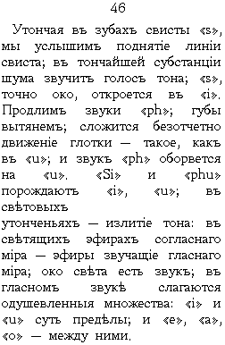
As we refine the whistlings "s" on the teeth, we hear the rise of a whistling line; in the refined substance of noise sounds the voice of a tone; "s", just like an eye, opens into an "i." We extend the sounds "ph"; we stretch out the lips; unaccountably a movement of the throat composes -- this way, like in a "u"; and the sound "ph" tears off into an "u." "Si" and "phu" generate "i," "u"; in the refinements of light there is -- an outpouring of tone: in the illuminated ethers of the consonant world are -- the sounding ethers of the vowel world; the eye of light is sound; in the vowel sound compose animated multitudes: "i" and "u" are the boundaries; and "e," "a," "o" are -- between them.
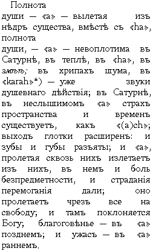
A fullness of the soul is -- "a" -- flying out from the netherworld of being, together with "ha," the fullness of the soul is -- "a"-- unincarnated in Saturn, in the warmth, in "ha," in the serpent; in screechings/wheezings of noise, in "karah"* are -- already sounds of the soul's activity; in Saturn, in the inaudible "a" exists a fear of space and time, like "(a)ch"; the exit of the throat is extended: and the teeth and the lips are spread apart; and flying between them, "a" flies out from them; and in it is both the pain of objectlessness, and passionate strivings to overcome the distances; it flies through everything to freedom; and there it bows before God; veneration is -- in the latter "a"; and horror is -- in the early "a."
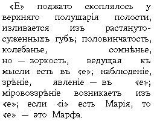
"E" had assembled itself all pursed up at the upper semicircle of the orifice, it pours forth from the extended-compressed lips; halfheartedness, hesitation, doubt, but -- perspicacity, leading to thought is in "e"; observation, vision, appearance is -- in "e"; one's Weltanschauung arises from "e"; if "i" is Maria, then "e" -- this is Martha.
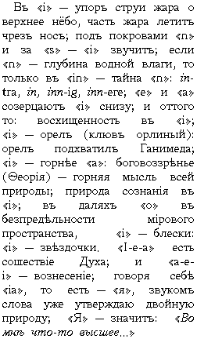
In "i" -- there is a support for the stream of heat against the upper palate, a part of the heat flies through the nose; under the covers of "n" and behind the "s" -- there sounds an "i"; if "n" is -- the depth of watery moisture, then only in "in" is -- the mystery of "n": in-tra, in, inn-ig, inn-ere; "e" and "a" contemplate "i" from below; and from there is: delight in "i," "i" is -- an eagle (an eagle's beak): the eagle kidnapped Ganymede; "i" is -- more mountain peaked than "a" -- Gods' vision (Theoria) is -- the mountain summit thought of all nature; the nature of consciousness is in "i"; in the distances is "o" in the limitlessness of world space, "i" are -- gleams: "i" are -- little stars. "I-e-a" is the descent of the Spirit; and "a-e-i" is -- the ascension; when I say to myself "ia," that is the Russian for "I am" [ya], with the sound of the word I reaffirm my dual nature; "I am" -- signifies : "In me is something higher. . ."
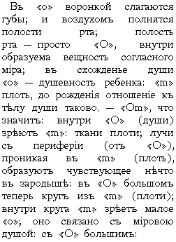
The lips compose like a funnel into "o"; and the orifices of the mouth are filled with air; the orifice of the mouth is -- simply an "O"; inside the externality of the consonant world is being formed; in the coming of the soul "o" is -- the soul quality of the child: "m" is -- the flesh; before birth the relationship of the soul to body is thus: -- "Om" which signifies: inside the "O's" (the souls) ripen the "m's"; the fabrics of the flesh; rays from the periphery (away from "O"), as they penetrate the "m" (the flesh), form a something sensory in the embryo: in the capital "O" now there is a circle of "m" (of flesh); inside the circle "m" a small "o" ripens; it is connected to the world soul: it is connected to the world soul: to the capital "O":
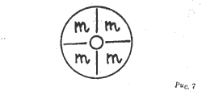
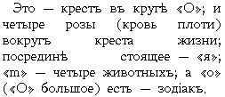
This is -- a cross in the circle of "O"; and four roses (the blood of the flesh) encircling the cross of life; standing in the center am --"I"; "m" is -- four animals; and "o" (capital "O") is -- the zodiac.
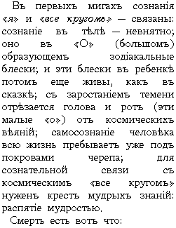
In the first instances of consciousness "I" and "all encircling" are -- connected: consciousness in the body is -- unintelligible; it is in the "O" (capital) giving form to zodiacal gleamings; and these gleamings are still alive in the child, then like in a fairy tale; with the growth of the crown [of the head] the head and mouth are cut off (these are the small "o") from the cosmic waftings; the selfconsciousness of the human being resides for one's whole life under the coverings of the skull; for a conscious connection with the cosmic "all encircling" the cross of wise knowledge is needed: the crucifixion by wisdom.
Death looks like this:
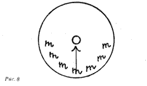
And after death we have:
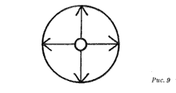
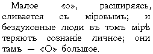
The small "o", as it widens, conflows with the world one; and the spiritless people in that world lose individual consciousness; there they are -- a capital "O."
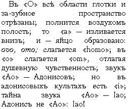
In "O" all areas of the throat and the trans-dental space are cut off; the orifice fills with air; that is "a" -- pouring out below; and -- the egg is formed: ovo, omo; "homo" comes together; in "o" is composed "om," putting aside soulful sensitivity; the sound "Ao" are -- of Adonises; but in the Adonysian cults there is an "i"; the mystery of the sound "Ao" is -- Iao; Adonis is not "Ao": he is Iao!
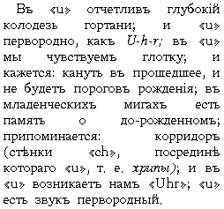
In "u" the deep shaft of the larynx is distinct; and "u" is primogenital, like U-h-r; in "u" we sense our throat; and it seems: sunken into the past, and there will be no thresholds of birth; in the first instants of infants there is a memory of the pre-birth; it calls to memory: a corridor (the walls are "ch", in the center of which is "u", i.e. screechings); and in the "u" there arises to us "Uhr"; "u" is a primogenital sound.
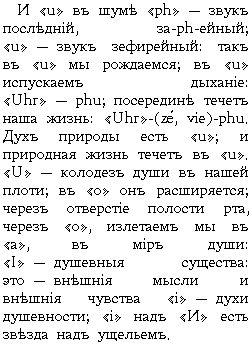
And "u" in the noise "ph" is -- the final sound, a trans-ph-ed sound; "u" is -- a zephyred sound: thus in "u" we are born; in "u" our breath escapes: "Uhr" is -- phu; our life flows in the center: "Uhr" -- (ze-vie) - phu. The spirit of nature is "u"; and natural life flows into "u." "U" is -- the shaft of the soul in our flesh; it widens out in "o"; through the opening of the orifice of the mouth, through the "o," we fly out into "a," into the world of the soul: the "I" are -- soul beings: these are -- external thoughts and feelings of "i" -- spirits of soulness; "i" above the "I" is the star above the ravine/gorge.